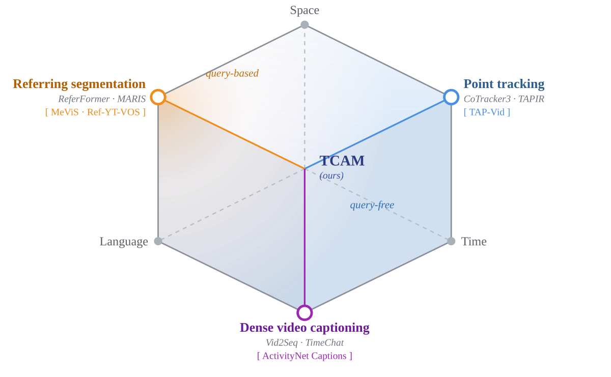
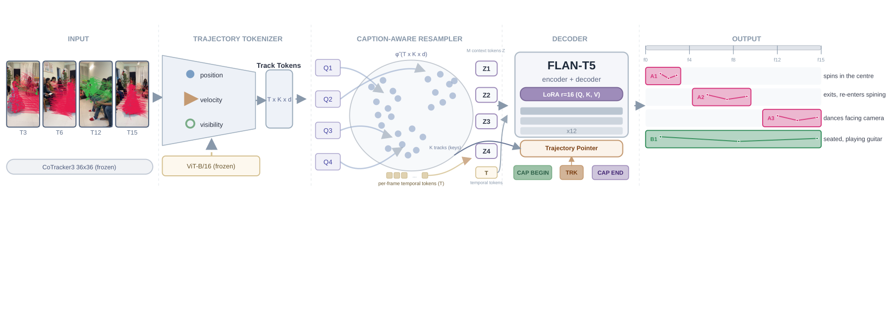

Abstract
We present TCAM (Track and Caption Any Motion), a generative framework that watches a video and — with no text query and no region prompt — decides what is moving, describes each motion in open vocabulary, locates it in time, and points to the exact trajectories that carry it. Dense point trackers follow pixels with sub-object precision but emit no language, while video-language models produce fluent descriptions only when handed a query and only from clip-level features that cannot resolve which pixels move. TCAM couples tracking and language at point granularity through a Caption-Aware Resampler: a small set of learnable queries cross-attends to dense CoTracker3 trajectory tokens and distills them into a fixed-length motion context that conditions an otherwise-unmodified FLAN-T5 decoder. A single autoregressive pass emits an entire video's events — spanning both sequential intervals and several concurrently active subjects — and each <TRK> token fires a lightweight pointer over the same trajectory tokens, so captioning and spatial grounding run on one shared backbone. A three-term objective supervises caption quality, pointer–mask alignment, and pointer diversity using only existing segmentation annotations. Trained on MeViS, STGR, and PLM-Video-Human, TCAM is evaluated on spatiotemporal grounding, dense captioning, and point-tracking accuracy at once.
Method


Qualitative examples
Color = subject. Tinted region = object mask; dots/trails = a random subset of the tracked points; the bar below each clip is the event timeline with a moving playhead and the active caption. Datasets: MeViS, PLM-Video-Human, STGR, and Ref-YouTube-VOS.
Sports & multi-event sequences (PLM-Video-Human / STGR)
Everyday motion (PLM-Video-Human)
Referring — one object from a language query (Ref-YouTube-VOS)
Additional examples
Additional clips with dense annotation: every point track that lies on each subject is drawn (solid dots + motion trails), tinted by its object mask and colored per subject. The event captions and their frame ranges (t…) are listed beside each clip so they are easy to read.
- t0–11 An ox stands grazing
- t12–23 then turns to face the approaching lion
- t0–11 A lion stalks toward the ox
- t12–23 closing in to sniff its prey
- t0–11 A brown horse grazes calmly
- t12–23 then flees the charging zebra
- t0–11 A zebra breaks into a chase
- t12–23 pursuing the horse
- t0–11 A rabbit nibbles, unaware
- t12–23 is pounced on and bolts away
- t0–11 A squirrel creeps toward the rabbit
- t12–23 then pounces to attack
- t0–4 This kid is in a basketball court. He is wearing a blue T-shirt with red and white lines on the sides and he is wearing matching shorts and black shoes over white socks. He has raised his hands to catch the ball. Then after catching the ball he is throwing the ball back towards the other kid and is catching it back. While doing this he is coming forward to the side and his face is towards that kid.
- t4–7 Continue to throw and catch the ball he is still moving forward to the side Then after catching it, he runs towards the net with the ball in his hand and by pressing his right leg, he jumps and after throwing the ball held in his hand, he throws it in the ball net and standing back, waits for the ball to come down.
- t7–11 Continue to wait for the ball to come down then the ball comes down he pushes that ball downwards on the ground by extending his right hand. Being a basket ball, that ball jumps back upwards. Then this child pushes that ball upwards and it comes back upwards. By doing this this child is moving forward to the other side.
- t11–15 While playing with that ball, the child moves forward to the other direction while playing with the ball and stands straight, holding the ball in his hand, he throws it towards the other net and waits for it to come back below.
- t0–4 The boy is on the basketball court and is passing the ball to another boy and catching it several times.
- t4–7 The boy leaps and shoots the ball in the ring.
- t8–15 The child dribbles the ball to the other ring away from the camera and shoots it.
- t0–3 A man is moving towards the right frame while standing on a skateboard and looking down. He is facing the right frame.
- t3–9 Then, he jumps, turns around on the skateboard and looks towards the camera while placing his both hands on his hips.
- t9–15 He gets down, holds the skateboard in his right hand and walks towards the camera.
- t0–11 The boy is dribbling the ball with an obstacle in front of him. He is dribbling ball alternately on his both hands.
- t12–15 As he reached the last cone or obstacle, he walked towards the basketball ring as he lifted the ball and shot it to the basketball ring.
- t0–0 The subject appears in the video, facing the camera with her left arm extending near her face. The subject puts down her left arm and lifts her right arm in the air while she is moving to her right side.
- t1–1 The subject maneuvers her body to the left frame while facing the right to see her companions.
- t1–2 The subject lifts her left arm for a second, then puts it down. As soon as her left arm was down, she then lifted her right arm while rapidly tip-toeing to the right frame.
- t3–3 The subject stops tip-toeing and then raises her left arm as she faces toward the left frame.
- t3–4 The subject maneuvers her body, spinning half to the left frame. Facing away from the camera as she stretches her left arm horizontally.
- t5–6 The subject turns her body toward the camera, still dancing.
- t0–23 a person riding a wave
Code
An anonymized package of the main scripts (model, training objective, data loaders, trajectory extraction, and this renderer) is available: tcam_code.zip · browse.